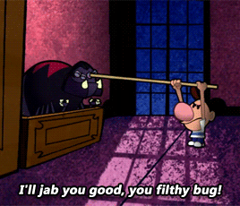

Ok so fist off hi!.......that was a lot.
Let's try that again.
Hi. My name is Skye Clarke, I'm 16, a libra, and have a dark sense of humor that just doesn't click with some people. *sigh*. Anyway, I also enjoy drawing when it doesn't end up looking like utter trash (which is rare btw), and use to be a really huge church girl when I was younger, though now I just refuse to go ¯\_(ツ)_/¯.
Wow that was a bunch of useless information. What would be more interesting?
I got it!
So to start off, throughout my life I have had many close encounters with death, in which could be said to have impact the way I see life and why it fascinates me enough to influence me into wanting to become a baby deliverer in the future.
For me, life is a beautiful thing that can be lengthy as Mount Everest or shorter than a dot can be cut off in a moment. "You have to live life to the fullest" and blah blah.
Anyway back to my near death experiences list 🤣
We'll stop here for now as anymore would be...odd
Next topic!!!
Likes:
Dislikes:
So you're probably wondering how did i get here? How did I find a passion for coding? (Even if you don't care, because same, let's pretend you do)
Well frankly I was forced into it at first
To elaborate, at my school in order to continue taking honors trig, you also have to take C++. At first I was dreading having to take such a class because....it was an extra class. However, once I started taking it I found it to be actually quite fun and mind engaging.
Yeah that was it. That was how I found out I enjoyed coding.
Next topic!